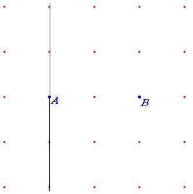

Problema 84
Busca un tercer punto C de manera que forme con A y B un triángulo rectángulo.
Hazlo de todas las maneras posibles
Solución de José Seijas Vega
Alumno de 2º Bachillerato C.E.S. San José (Málaga) A.A.A.A.M.
Hay tres modos distintos:
Que A sea el ángulo recto: En ese caso todos
los puntos que pertenezcan a la 
perpendicular del segmento AB que pasa por A formaran ángulo recto.
Que sea en B: El mismo proceso pero la
perpendicular a la que deben
pertenecer los puntos pasa por B.
Que sea en C: Sabemos que por arco capaz en una
semicircunferencia cualquier
punto uniéndolo a los extremos del diámetro forma 90 grados. Por eso si
consideramos el diámetro a AB el punto C será cualquiera que pertenezca a
esta circunferencia.
En todos los casos hay que saber que
solo serán validos según la
nomenclatura que se quiera utilizar. Siendo los superiores al segmento AB
si la nomenclatura es contraria al sentido horario y los inferiores a la
horaria